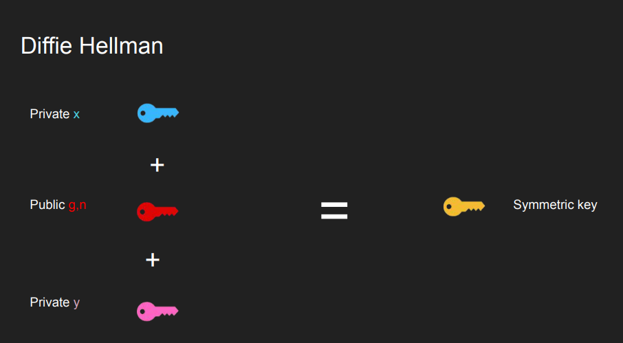
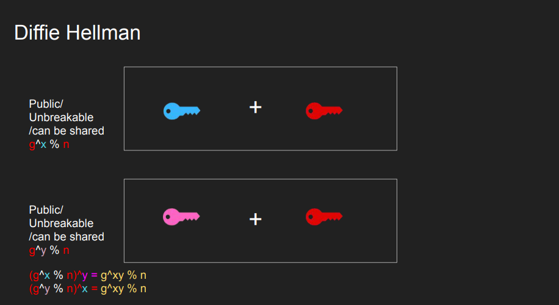
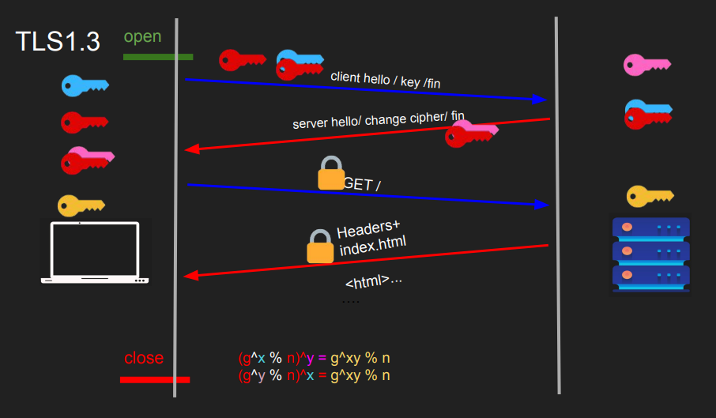

Slides from Hussein Nasser’s Networking Course
A standard model allows decoupling, so that the layers can be worked on or upgraded without worrying about the rest.
OSI (Open Systems Interconnect) Model
7 Layers each describe a specific networking component
The TCP/IP Model or Internet Protocol Suite
Much simpler than OSI, just 4 layer
Physical layer is not officially covered in the model
It is used to translate IP addresses to MAC addresses, since IPs are changeable and MAC addresses are (usually) fixed. ARP is local.
tcpdump -n -i wlp3s0 arptcpdump with src and dst filters:
tcpdump -n -v -i wlp3s0 src 192.168.1.2 or dst 142.243.66.23To deliver the packet to the destination host, the source IP, destination IP, source MAC address, and destination MAC address should be known. Some basic rules for the packet flow:
Finding a device with a unique MAC address in a network is done by sending requests to all devices in the network. Only the device with the intended MAC address accepts the connection. But when the network is of a bigger scale than a simple home network, this method is not possible to scale. This is where IP addresses and routers come into play. Routers have two different IP addresses for the two networks they are connecting. When sending an IP packet (layer 3, router) there is a process of AND (&)ing with the subnet mask to find out if the packet is destined to the same network or another, and passing forward until the TTL of the packet goes to zero or the destination is found.
TTL - Time to Live - this gives the count of how many hops a packet can survive. TTL is decreased by 1 every hop. TTL is needed because without it the packets might hop from router to router indefinitely.
Note [Optimization] Keeping your server and database in the same subnet will be more efficient than those two being in separate subnets. Because the subnets are usually connected by a router (the routers live in both networks), if the router is congested, we are gonna see delays. Instead, we can use a switch in between the database and the backend.
IP is the network layer communications protocol.
IP Addresses are a layer 3 property. Can be set automatically or statically, has network and host portions. 4 bytes in IPv4 - 32 bits.
It is used by network devices, including routers, to send error messages and operational information indicating success or failure when communicating with another IP address. It is used by ping and traceroute.
ping google.comtraceroute google.comtcpdump -n -i wlp3s0 icmpLayer 4 protocol, sits on top of the IP protocol (Network layer). While IP can address a host using IP addresses, UDP has the ability to address processes in a host using ports. Simpler and stateless protocol, compared to TCP. Has 8-byte header on top of 20 bytes of the IP packet. Used for:
Multiplexing (many to one) and demultiplexing (one to many). IP targets hosts only. Each host can have multiple applications running. Ports can be used to identify the ‘apps’ or ‘processes’. The sender multiplexes all inputs into single IP packets into UDP, and the receiver demultiplexes UDP datagrams in IP packets to each app or process. A four-tuple (Source IP, Source Port, Destination IP, Destination Port) can represent every communication between two devices.
Note Every time there is a mapping like in DNS, ARP tables, there’s a chance of poisoning - ARP poisoning, DNS poisoning.
Note Because we have 65535 ports, we can have a maximum of 65535 connections (theoretically) between a client IP and a single server process assuming the client uses all its ports to connect to the server process. Practically though, some of the ports are already reserved.
Capturing DNS server requests and responses using
tcpdump:
nslookup google.com 8.8.8.8tcpdump -n -v -i wlp3s0 src 8.8.8.8 or dst 8.8.8.8tcpdump: listening on wlp3s0, link-type EN10MB (Ethernet), snapshot length 262144 bytes
16:26:29.543518 IP (tos 0x0, ttl 64, id 17495, offset 0, flags [none], proto UDP (17), length 56)
192.168.0.36.59200 > 8.8.8.8.53: 30104+ A? google.com. (28)
16:26:29.560006 IP (tos 0x0, ttl 121, id 35261, offset 0, flags [none], proto UDP (17), length 72)
8.8.8.8.53 > 192.168.0.36.59200: 30104 1/0/0 google.com. A 172.217.169.14 (44)
16:26:29.560504 IP (tos 0x0, ttl 64, id 20170, offset 0, flags [none], proto UDP (17), length 56)
192.168.0.36.36072 > 8.8.8.8.53: 1041+ AAAA? google.com. (28)
16:26:29.590092 IP (tos 0x0, ttl 120, id 2066, offset 0, flags [none], proto UDP (17), length 84)
8.8.8.8.53 > 192.168.0.36.36072: 1041 1/0/0 google.com. AAAA 2a00:1450:4009:823::200e (56)Similar to UDP, it’s a Layer 4 protocol and can address processes in a host using ports. It ‘controls’ the transmission, unlike UDP which is like a firehose. Requires a connection before transmitting data. Connection is made using a ‘handshake’. Hence it’s stateful. Has 20 bytes header. Used for reliable communications like:
TCP Connection is a Layer 5 (session) concept. The connection between client and server must be there to send data, can’t send data outside of a connection, requires a 3-way TCP handshake.
The connection is identified by four properties (Source IP, Source Port, Destination IP, Destination Port). These four properties are combined and hashed and saved as a file descriptor (also called sockets).
Note Socket often refers specifically to an internet socket or TCP socket. An internet socket is minimally characterized by the following:
The Transmission Control Protocol differs in several key features compared to the User Datagram Protocol:
Capturing TCP segments with tcpdump:
ping example.comtcpdump -n -v -i wlp3s0 src 93.184.216.34 or dst 93.184.216.34 and port 80curl example.com tcpdump: listening on wlp3s0, link-type EN10MB (Ethernet), snapshot length 262144 bytes
15:47:30.859589 IP (tos 0x0, ttl 64, id 33813, offset 0, flags [DF], proto TCP (6), length 60)
192.168.0.36.50584 > 93.184.216.34.80: Flags [S], cksum 0x8cea (correct), seq 3227649586, win 64240, options [mss 1460,sackOK,TS val 338897101 ecr 0,nop,wscale 7], length 0
15:47:30.962271 IP (tos 0x0, ttl 51, id 0, offset 0, flags [DF], proto TCP (6), length 60)
93.184.216.34.80 > 192.168.0.36.50584: Flags [S.], cksum 0x314f (correct), seq 2019451891, ack 3227649587, win 65535, options [mss 1460,sackOK,TS val 2278814291 ecr 338897101,nop,wscale 9], length 0
15:47:30.962345 IP (tos 0x0, ttl 64, id 33814, offset 0, flags [DF], proto TCP (6), length 52)
192.168.0.36.50584 > 93.184.216.34.80: Flags [.], cksum 0x5dc0 (correct), ack 1, win 502, options [nop,nop,TS val 338897204 ecr 2278814291], length 0
15:47:30.962544 IP (tos 0x0, ttl 64, id 33815, offset 0, flags [DF], proto TCP (6), length 126)
192.168.0.36.50584 > 93.184.216.34.80: Flags [P.], cksum 0xcfb7 (correct), seq 1:75, ack 1, win 502, options [nop,nop,TS val 338897204 ecr 2278814291], length 74: HTTP, length: 74
GET / HTTP/1.1
Host: example.com
User-Agent: curl/8.2.1
Accept: */*
15:47:31.069298 IP (tos 0x0, ttl 51, id 40104, offset 0, flags [none], proto TCP (6), length 52)
93.184.216.34.80 > 192.168.0.36.50584: Flags [.], cksum 0x5e81 (correct), ack 75, win 128, options [nop,nop,TS val 2278814398 ecr 338897204], length 0
15:47:31.070181 IP (tos 0x0, ttl 51, id 40105, offset 0, flags [none], proto TCP (6), length 1500)
93.184.216.34.80 > 192.168.0.36.50584: Flags [.], cksum 0x417a (correct), seq 1:1449, ack 75, win 128, options [nop,nop,TS val 2278814398 ecr 338897204], length 1448: HTTP, length: 1448
HTTP/1.1 200 OK
Age: 187681
Cache-Control: max-age=604800
Content-Type: text/html; charset=UTF-8
Date: Tue, 08 Aug 2023 14:47:30 GMT
Etag: "3147526947+ident"
Expires: Tue, 15 Aug 2023 14:47:30 GMT
Last-Modified: Thu, 17 Oct 2019 07:18:26 GMT
Server: ECS (nyb/1DCD)
Vary: Accept-Encoding
X-Cache: HIT
Content-Length: 1256
<!doctype html>
<html>
<head>
<title>Example Domain</title>
<meta charset="utf-8" />
<meta http-equiv="Content-type" content="text/html; charset=utf-8" />
<meta name="viewport" content="width=device-width, initial-scale=1" />
<style type="text/css">
body {
background-color: #f0f0f2;
margin: 0;
padding: 0;
font-family: -apple-system, system-ui, BlinkMacSystemFont, "Segoe UI", "Open Sans", "Helvetica Neue", Helvetica, Arial, sans-serif;
}
div {
width: 600px;
margin: 5em auto;
padding: 2em;
background-color: #fdfdff;
border-radius: 0.5em;
box-shadow: 2px 3px 7px 2px rgba(0,0,0,0.02);
}
a:link, a:visited {
color: #38488f;
text-decoration: none;
}
@media (max-width: 700px) {
div {
margin: 0 auto;
width: auto;
}
}
</style>
</head>
<body>
<div>
<h1>Example Domain</h1>
<p>This domain is for use in illustrative examples in documents. You may use this
domain in literature without prior coord [|http]
15:47:31.070244 IP (tos 0x0, ttl 64, id 33816, offset 0, flags [DF], proto TCP (6), length 52)
192.168.0.36.50584 > 93.184.216.34.80: Flags [.], cksum 0x5700 (correct), ack 1449, win 493, options [nop,nop,TS val 338897312 ecr 2278814398], length 0
15:47:31.071358 IP (tos 0x0, ttl 51, id 40106, offset 0, flags [none], proto TCP (6), length 195)
93.184.216.34.80 > 192.168.0.36.50584: Flags [P.], cksum 0x7a43 (correct), seq 1449:1592, ack 75, win 128, options [nop,nop,TS val 2278814398 ecr 338897204], length 143: HTTP
15:47:31.071371 IP (tos 0x0, ttl 64, id 33817, offset 0, flags [DF], proto TCP (6), length 52)
192.168.0.36.50584 > 93.184.216.34.80: Flags [.], cksum 0x5668 (correct), ack 1592, win 501, options [nop,nop,TS val 338897313 ecr 2278814398], length 0
15:47:31.071573 IP (tos 0x0, ttl 64, id 33818, offset 0, flags [DF], proto TCP (6), length 52)
192.168.0.36.50584 > 93.184.216.34.80: Flags [F.], cksum 0x5667 (correct), seq 75, ack 1592, win 501, options [nop,nop,TS val 338897313 ecr 2278814398], length 0
15:47:31.177303 IP (tos 0x0, ttl 51, id 40107, offset 0, flags [none], proto TCP (6), length 52)
93.184.216.34.80 > 192.168.0.36.50584: Flags [F.], cksum 0x576f (correct), seq 1592, ack 76, win 128, options [nop,nop,TS val 2278814506 ecr 338897313], length 0
15:47:31.177343 IP (tos 0x0, ttl 64, id 33819, offset 0, flags [DF], proto TCP (6), length 52)
192.168.0.36.50584 > 93.184.216.34.80: Flags [.], cksum 0x5590 (correct), ack 1593, win 501, options [nop,nop,TS val 338897419 ecr 2278814506], length 0By definition TCP is a stateful protocol and it has states. Both client and server have to maintain states like window sizes, sequences, and the state of the connection.
| State | Endpoint | Description |
|---|---|---|
| LISTEN | Server | Waiting for a connection request from any remote TCP end-point. |
| SYN-SENT | Client | Waiting for a matching connection request after having sent a connection request. |
| SYN-RECEIVED | Server | Waiting for a confirming connection request acknowledgment after having both received and sent a connection request. |
| ESTABLISHED | Server and client | An open connection, data received can be delivered to the user. The normal state for the data transfer phase of the connection. |
| FIN-WAIT-1 | Server and client | Waiting for a connection termination request from the remote TCP, or an acknowledgment of the connection termination request previously sent. |
| FIN-WAIT-2 | Server and client | Waiting for a connection termination request from the remote TCP. |
| CLOSE-WAIT | Server and client | Waiting for a connection termination request from the local user. |
| CLOSING | Server and client | Waiting for a connection termination request acknowledgment from the remote TCP. |
| LAST-ACK | Server and client | Waiting for an acknowledgment of the connection termination request previously sent to the remote TCP (which includes an acknowledgment of its connection termination request). |
| TIME-WAIT | Server or client | Waiting for enough time to pass to be sure that all remaining packets on the connection have expired. |
| CLOSED | Server and client | No connection state at all. |
When the server sends the last fin, the client after
receiving it sends the last ack to the server. The
server can now CLOSE. Basically there is no further
communication from the server. The client doesn’t really know if the
server received the ack or not (also called the Two
Generals’ Problem). The client now goes into a
TIME_WAIT state, which is 4 minutes
[2 MSL(Maximum Segment Length)].
Note [Optimization] Whoever requests the fin will end up in the TIME_WAIT state. We wouldn’t want the server to be flooded with these waits when closing connections. If you own the frontend and the backend, you can design a protocol such that you send a request so that the client can instantiate the fin for you. The client will be in the TIME_WAIT state, which will free up the server.
While TCP is a reliable protocol for connections it has some disadvantages.
Head of Line Blocking: Head-of-line blocking in TCP occurs when a packet loss or delay in a network causes subsequent packets to be held up, hindering their delivery even if they’re ready to be sent.
TCP Meltdown: TCP Meltdown occurs when you stack one transmission protocol on top of another, like what happens when an OpenVPN TCP tunnel is transporting TCP traffic inside it.
IPV4 has a limit of 4 billion addresses which is not enough considering the number of devices connected to the Internet. IPV6 also solves this issue but for IPV4 addressing, NAT allows multiples of devices to access the internet while also remaining private inside a network. It gives one public IP address (the gateway) and multiple private addresses for internal use.
NAT uses the IP ranges - 192.168.x.x, 10.0.0.x allocated specifically for private networks.
All devices have the same public IP address which is the router. The source port and IP address are being mapped to a different source Port and IP for communication with the internet. This mapping called the ‘NAT table’ lives in the router has mappings to/from public and private ip-port pairs.
Applications:
MSS (Maximum Segment Size) acts as a limiting factor for the size of packets or small data chunks that traverse a network. It focuses on measuring the payload—the non-header portion—of a packet. The value of MSS is intricately linked to another key parameter concerning packet dimensions: MTU (Maximum Transmission Unit), which includes the TCP and IP (Internet Protocol) headers.
The layer 4 unit is ‘segment’. The segment slides into an ‘IP Packet’ in layer 3. The IP Packet now has the segment + headers. The IP Packet slides into a layer 2 ‘frame’. The frame has a fixed size based on the networking configuration. The size of the frame determines the size of the segment. Maximum Transmission Unit (MTU) is the size of the frame. It is a network interface property(default 1500). The larger the frame size, the lower the latency. If you can fit more data into a single segment you lower latency, it lowers overhead from headers and processing. Some networks have jumbo frames up to 9000 bytes. Are there are networks with larger MTUs?
Essentially, the MSS is equal to MTU minus the size of a TCP header and an IP header:
MTU − (TCPheader+IPheader) = MSS
One of the key differences between MTU and MSS is that if a packet exceeds a device’s MTU, it is broken up into smaller pieces, or “fragmented.” These frames then have to be assembled and then the frame itself has to have ‘More Fragments (MF)’ bit set in it’s flags. In contrast, if a packet exceeds the MSS, it is dropped and not delivered.
The maximum MTU of the internet is 1500 bytes, and the maximum MSS is 1460 bytes.
Since then various other transmission systems have come and gone, but the lowest MTU value of them has still been Ethernet at 1500 bytes. Going bigger than the lowest MTU on a network will either result in IP fragmentation, or the need to do path MTU detection. Both of which have their own sets of problems. Even if sometimes large OS vendors dropped the default MTU to even lower at times.
Check MTU in a linux machine
ip a | grep -i mtuPath MTU Discovery (PMTUD)
MTU is a network interface property; each host can have a different value. You really need to use the smallest MTU in the network. Path MTU helps determine the MTU on the network path. The client sends an IP packet with its MTU(in the options field of the IP header) and a DF flag. The host with a smaller MTU will need to fragment but can’t. The host sends back an ICMP message indicating fragmentation is needed(Type 3 – Destination Unreachable: Code 4 Fragmentation required, and DF flag set), which will lower the MTU. Path MTU can discover the network’s lowest MTU with ICMP.

IP addresses are essential for transmitting IP packets, forming the foundation of network communications, while DNS serves the purpose of converting hostnames (text) into IP addresses (numbers). Hostnames can remain unchanged even if IP addresses change, and a single service can have multiple IP addresses. DNS facilitates the selection of the most suitable IP address(es) based on factors like geographic proximity and lower server loads, ensuring optimal performance. DNS is built on top of UDP.
Beyond IP addresses, DNS contains various types of information:
These are some of the more well-known records. Learn more
All DNS records incorporate a ‘TTL’ (Time-to-Live), indicating how often a DNS server refreshes that record.
The DNS resolution process involves multiple steps:
The DNS structure comprises distinct layers—DNS recursor, Root nameserver, TLD nameserver, and Authoritative nameserver—intentionally designed for distribution, except for the centralized Authoritative nameserver. This design is crucial due to DNS being the most queried system.
However, DNS lacks inherent encryption, enabling ISPs to view all DNS traffic. This unencrypted exposure elevates the risk of potential vulnerabilities, including DNS hijacking, redirecting users to malicious sites, and DNS poisoning, inserting false data into DNS queries. As a result, attackers can exploit these openings. To address these security risks, DNS over TLS (DoT) and DNS over HTTPS (DoH) protocols aim to introduce encryption.
DNS querying using nslookup
nslookup labinojha.com.npnslookup labinojha.com.np 8.8.8.8 # non-authoritativenslookup -type=A labinojha.com.npnslookup -type=txt labinojha.com.npnslookup -type=ns labinojha.com.npnslookup labinojha.com.np may.ns.cloudflare.com # authoritative name serverdig is another tool that can be used.
Fundamental encryption for network communication. Primarily used for securing HTTP, extends to email, messaging, VoIP.
Derived from SSL, initially SSL 3.1. “TLS” and “SSL” terms used interchangeably due to history.
HTTP (Hypertext Transfer Protocol):
Unencrypted protocol for data transmission over the web.
Data sent in plain text, susceptible to interception and eavesdropping.

HTTPS (Hypertext Transfer Protocol Secure):
Secured version of HTTP.
Uses encryption to safeguard data during transmission.
Employs a handshake process to set up secure communication.
Handshake and Key Exchange:
Asymmetric Encryption:
Symmetric Encryption:
Certificate and Authentication:
Modern cryptographic algorithms like AES are used for symmetric encryption in HTTPS, not XOR. - Asymmetric encryption is used mainly for key exchange, not for encrypting the actual data due to its speed overhead.
TLS 1.2
TLS 1.2 relies on the RSA asymmetric encryption algorithm. Here’s the handshake process in this version:
This uses RSA which is a popular asymmetric encrytion algorithm.
The TLS 1.2 handshake involves two round trips. However, a challenge with this approach is the absence of perfect forward secrecy. If a private key is compromised in the future, an attacker could potentially decrypt past sessions. This is why security certificates are periodically renewed.
Diffie-Hellman Key Exchange Diffie-Hellman key exchange is used instead of RSA for achieving forward secrecy. This involves two private keys and one public key to generate a shared symmetric key.
 
TLS 1.3 
In TLS 1.3, the process is enhanced. Here’s the updated handshake process:
TLS 1.3 introduces several improvements, including the potential for a one-round-trip or even a zero-round-trip handshake, enhancing efficiency while maintaining strong security.